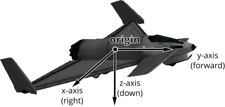
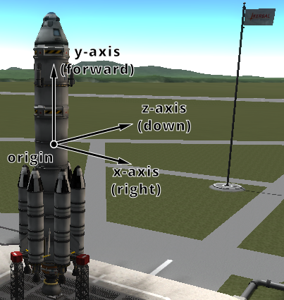
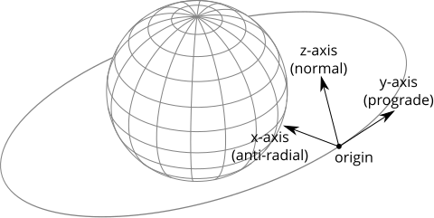
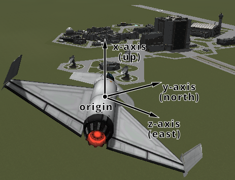
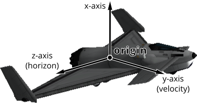

Vessel#
- class SpaceCenter.Vessel#
These objects are used to interact with vessels in KSP. This includes getting orbital and flight data, manipulating control inputs and managing resources. Created using
SpaceCenter.active_vesselorSpaceCenter.vessels.- name: string#
The name of the vessel.
- Attribute:
Can be read or written
- Return type:
string
- type: SpaceCenter.VesselType#
The type of the vessel.
- Attribute:
Can be read or written
- Return type:
- situation: SpaceCenter.VesselSituation#
The situation the vessel is in.
- Attribute:
Read-only, cannot be set
- Return type:
- recoverable: boolean#
Whether the vessel is recoverable.
- Attribute:
Read-only, cannot be set
- Return type:
boolean
- recover()#
Recover the vessel.
- met: number#
The mission elapsed time in seconds.
- Attribute:
Read-only, cannot be set
- Return type:
number
- biome: string#
The name of the biome the vessel is currently in.
- Attribute:
Read-only, cannot be set
- Return type:
string
- flight([reference_frame = None])#
Returns a
SpaceCenter.Vessel.flight()object that can be used to get flight telemetry for the vessel, in the specified reference frame.- Parameters:
reference_frame (
SpaceCenter.ReferenceFrame) – Reference frame. Defaults to the vessel’s surface reference frame (SpaceCenter.Vessel.surface_reference_frame).- Return type:
Note
When this is called with no arguments, the vessel’s surface reference frame is used. This reference frame moves with the vessel, therefore velocities and speeds returned by the flight object will be zero. See the reference frames tutorial for examples of getting the orbital and surface speeds of a vessel.
- orbit: SpaceCenter.Orbit#
The current orbit of the vessel.
- Attribute:
Read-only, cannot be set
- Return type:
- control: SpaceCenter.Control#
Returns a
SpaceCenter.Vessel.controlobject that can be used to manipulate the vessel’s control inputs. For example, its pitch/yaw/roll controls, RCS and thrust.- Attribute:
Read-only, cannot be set
- Return type:
- comms: SpaceCenter.Comms#
Returns a
SpaceCenter.Vessel.commsobject that can be used to interact with CommNet for this vessel.- Attribute:
Read-only, cannot be set
- Return type:
- auto_pilot: SpaceCenter.AutoPilot#
An
SpaceCenter.Vessel.auto_pilotobject, that can be used to perform simple auto-piloting of the vessel.- Attribute:
Read-only, cannot be set
- Return type:
- crew_capacity: number#
The number of crew that can occupy the vessel.
- Attribute:
Read-only, cannot be set
- Return type:
number
- crew_count: number#
The number of crew that are occupying the vessel.
- Attribute:
Read-only, cannot be set
- Return type:
number
- crew: List#
The crew in the vessel.
- Attribute:
Read-only, cannot be set
- Return type:
List
- resources: SpaceCenter.Resources#
A
SpaceCenter.Vessel.resourcesobject, that can used to get information about resources stored in the vessel.- Attribute:
Read-only, cannot be set
- Return type:
- resources_in_decouple_stage(stage[, cumulative = True])#
Returns a
SpaceCenter.Vessel.resourcesobject, that can used to get information about resources stored in a given stage.- Parameters:
stage (
number) – Get resources for parts that are decoupled in this stage.cumulative (
boolean) – WhenFalse, returns the resources for parts decoupled in just the given stage. WhenTruereturns the resources decoupled in the given stage and all subsequent stages combined.
- Return type:
Note
For details on stage numbering, see the discussion on Staging.
- parts: SpaceCenter.Parts#
A
SpaceCenter.Partsobject, that can used to interact with the parts that make up this vessel.- Attribute:
Read-only, cannot be set
- Return type:
- mass: number#
The total mass of the vessel, including resources, in kg.
- Attribute:
Read-only, cannot be set
- Return type:
number
- dry_mass: number#
The total mass of the vessel, excluding resources, in kg.
- Attribute:
Read-only, cannot be set
- Return type:
number
- thrust: number#
The total thrust currently being produced by the vessel’s engines, in Newtons. This is computed by summing
SpaceCenter.Engine.thrustfor every engine in the vessel.- Attribute:
Read-only, cannot be set
- Return type:
number
- available_thrust: number#
Gets the total available thrust that can be produced by the vessel’s active engines, in Newtons. This is computed by summing
SpaceCenter.Engine.available_thrustfor every active engine in the vessel.- Attribute:
Read-only, cannot be set
- Return type:
number
- available_thrust_at(pressure)#
Gets the total available thrust that can be produced by the vessel’s active engines, in Newtons. This is computed by summing
SpaceCenter.Engine.available_thrust_at()for every active engine in the vessel. Takes the given pressure into account.- Parameters:
pressure (
number) – Atmospheric pressure in atmospheres- Return type:
number
- max_thrust: number#
The total maximum thrust that can be produced by the vessel’s active engines, in Newtons. This is computed by summing
SpaceCenter.Engine.max_thrustfor every active engine.- Attribute:
Read-only, cannot be set
- Return type:
number
- max_thrust_at(pressure)#
The total maximum thrust that can be produced by the vessel’s active engines, in Newtons. This is computed by summing
SpaceCenter.Engine.max_thrust_at()for every active engine. Takes the given pressure into account.- Parameters:
pressure (
number) – Atmospheric pressure in atmospheres- Return type:
number
- max_vacuum_thrust: number#
The total maximum thrust that can be produced by the vessel’s active engines when the vessel is in a vacuum, in Newtons. This is computed by summing
SpaceCenter.Engine.max_vacuum_thrustfor every active engine.- Attribute:
Read-only, cannot be set
- Return type:
number
- specific_impulse: number#
The combined specific impulse of all active engines, in seconds. This is computed using the formula described here.
- Attribute:
Read-only, cannot be set
- Return type:
number
- specific_impulse_at(pressure)#
The combined specific impulse of all active engines, in seconds. This is computed using the formula described here. Takes the given pressure into account.
- Parameters:
pressure (
number) – Atmospheric pressure in atmospheres- Return type:
number
- vacuum_specific_impulse: number#
The combined vacuum specific impulse of all active engines, in seconds. This is computed using the formula described here.
- Attribute:
Read-only, cannot be set
- Return type:
number
- kerbin_sea_level_specific_impulse: number#
The combined specific impulse of all active engines at sea level on Kerbin, in seconds. This is computed using the formula described here.
- Attribute:
Read-only, cannot be set
- Return type:
number
- moment_of_inertia: Tuple#
The moment of inertia of the vessel around its center of mass in \(kg.m^2\). The inertia values in the returned 3-tuple are around the pitch, roll and yaw directions respectively. This corresponds to the vessels reference frame (
SpaceCenter.Vessel.reference_frame).- Attribute:
Read-only, cannot be set
- Return type:
Tuple
- inertia_tensor: List#
The inertia tensor of the vessel around its center of mass, in the vessels reference frame (
SpaceCenter.Vessel.reference_frame). Returns the 3x3 matrix as a list of elements, in row-major order.- Attribute:
Read-only, cannot be set
- Return type:
List
- available_torque: Tuple#
The maximum torque that the vessel generates. Includes contributions from reaction wheels, RCS, gimballed engines and aerodynamic control surfaces. Returns the torques in \(N.m\) around each of the coordinate axes of the vessels reference frame (
SpaceCenter.Vessel.reference_frame). These axes are equivalent to the pitch, roll and yaw axes of the vessel.- Attribute:
Read-only, cannot be set
- Return type:
Tuple
- available_reaction_wheel_torque: Tuple#
The maximum torque that the currently active and powered reaction wheels can generate. Returns the torques in \(N.m\) around each of the coordinate axes of the vessels reference frame (
SpaceCenter.Vessel.reference_frame). These axes are equivalent to the pitch, roll and yaw axes of the vessel.- Attribute:
Read-only, cannot be set
- Return type:
Tuple
- available_rcs_torque: Tuple#
The maximum torque that the currently active RCS thrusters can generate. Returns the torques in \(N.m\) around each of the coordinate axes of the vessels reference frame (
SpaceCenter.Vessel.reference_frame). These axes are equivalent to the pitch, roll and yaw axes of the vessel.- Attribute:
Read-only, cannot be set
- Return type:
Tuple
- available_rcs_force: Tuple#
The maximum force that the currently active RCS thrusters can generate. Returns the forces in \(N\) along each of the coordinate axes of the vessels reference frame (
SpaceCenter.Vessel.reference_frame). These axes are equivalent to the right, forward and bottom directions of the vessel.- Attribute:
Read-only, cannot be set
- Return type:
Tuple
- available_engine_torque: Tuple#
The maximum torque that the currently active and gimballed engines can generate. Returns the torques in \(N.m\) around each of the coordinate axes of the vessels reference frame (
SpaceCenter.Vessel.reference_frame). These axes are equivalent to the pitch, roll and yaw axes of the vessel.- Attribute:
Read-only, cannot be set
- Return type:
Tuple
- available_control_surface_torque: Tuple#
The maximum torque that the aerodynamic control surfaces can generate. Returns the torques in \(N.m\) around each of the coordinate axes of the vessels reference frame (
SpaceCenter.Vessel.reference_frame). These axes are equivalent to the pitch, roll and yaw axes of the vessel.- Attribute:
Read-only, cannot be set
- Return type:
Tuple
- available_other_torque: Tuple#
The maximum torque that parts (excluding reaction wheels, gimballed engines, RCS and control surfaces) can generate. Returns the torques in \(N.m\) around each of the coordinate axes of the vessels reference frame (
SpaceCenter.Vessel.reference_frame). These axes are equivalent to the pitch, roll and yaw axes of the vessel.- Attribute:
Read-only, cannot be set
- Return type:
Tuple
- reference_frame: SpaceCenter.ReferenceFrame#
The reference frame that is fixed relative to the vessel, and orientated with the vessel.
The origin is at the center of mass of the vessel.
The axes rotate with the vessel.
The x-axis points out to the right of the vessel.
The y-axis points in the forward direction of the vessel.
The z-axis points out of the bottom off the vessel.
- Attribute:
Read-only, cannot be set
- Return type:

Vessel reference frame origin and axes for the Aeris 3A aircraft#

Vessel reference frame origin and axes for the Kerbal-X rocket#
- orbital_reference_frame: SpaceCenter.ReferenceFrame#
The reference frame that is fixed relative to the vessel, and orientated with the vessels orbital prograde/normal/radial directions.
The origin is at the center of mass of the vessel.
The axes rotate with the orbital prograde/normal/radial directions.
The x-axis points in the orbital anti-radial direction.
The y-axis points in the orbital prograde direction.
The z-axis points in the orbital normal direction.
- Attribute:
Read-only, cannot be set
- Return type:
Note
Be careful not to confuse this with ‘orbit’ mode on the navball.

Vessel orbital reference frame origin and axes#
- surface_reference_frame: SpaceCenter.ReferenceFrame#
The reference frame that is fixed relative to the vessel, and orientated with the surface of the body being orbited.
The origin is at the center of mass of the vessel.
The axes rotate with the north and up directions on the surface of the body.
The x-axis points in the zenith direction (upwards, normal to the body being orbited, from the center of the body towards the center of mass of the vessel).
The y-axis points northwards towards the astronomical horizon (north, and tangential to the surface of the body – the direction in which a compass would point when on the surface).
The z-axis points eastwards towards the astronomical horizon (east, and tangential to the surface of the body – east on a compass when on the surface).
- Attribute:
Read-only, cannot be set
- Return type:
Note
Be careful not to confuse this with ‘surface’ mode on the navball.

Vessel surface reference frame origin and axes#
- surface_velocity_reference_frame: SpaceCenter.ReferenceFrame#
The reference frame that is fixed relative to the vessel, and orientated with the velocity vector of the vessel relative to the surface of the body being orbited.
The origin is at the center of mass of the vessel.
The axes rotate with the vessel’s velocity vector.
The y-axis points in the direction of the vessel’s velocity vector, relative to the surface of the body being orbited.
The z-axis is in the plane of the astronomical horizon.
The x-axis is orthogonal to the other two axes.
- Attribute:
Read-only, cannot be set
- Return type:

Vessel surface velocity reference frame origin and axes#
- position(reference_frame)#
The position of the center of mass of the vessel, in the given reference frame.
- Parameters:
reference_frame (
SpaceCenter.ReferenceFrame) – The reference frame that the returned position vector is in.- Returns:
The position as a vector.
- Return type:
Tuple
- bounding_box(reference_frame)#
The axis-aligned bounding box of the vessel in the given reference frame.
- Parameters:
reference_frame (
SpaceCenter.ReferenceFrame) – The reference frame that the returned position vectors are in.- Returns:
The positions of the minimum and maximum vertices of the box, as position vectors.
- Return type:
Tuple
- velocity(reference_frame)#
The velocity of the center of mass of the vessel, in the given reference frame.
- Parameters:
reference_frame (
SpaceCenter.ReferenceFrame) – The reference frame that the returned velocity vector is in.- Returns:
The velocity as a vector. The vector points in the direction of travel, and its magnitude is the speed of the body in meters per second.
- Return type:
Tuple
- rotation(reference_frame)#
The rotation of the vessel, in the given reference frame.
- Parameters:
reference_frame (
SpaceCenter.ReferenceFrame) – The reference frame that the returned rotation is in.- Returns:
The rotation as a quaternion of the form \((x, y, z, w)\).
- Return type:
Tuple
- direction(reference_frame)#
The direction in which the vessel is pointing, in the given reference frame.
- Parameters:
reference_frame (
SpaceCenter.ReferenceFrame) – The reference frame that the returned direction is in.- Returns:
The direction as a unit vector.
- Return type:
Tuple
- angular_velocity(reference_frame)#
The angular velocity of the vessel, in the given reference frame.
- Parameters:
reference_frame (
SpaceCenter.ReferenceFrame) – The reference frame the returned angular velocity is in.- Returns:
The angular velocity as a vector. The magnitude of the vector is the rotational speed of the vessel, in radians per second. The direction of the vector indicates the axis of rotation, using the right-hand rule.
- Return type:
Tuple
- class SpaceCenter.VesselType#
The type of a vessel. See
SpaceCenter.Vessel.type.- base#
Base.
- debris#
Debris.
- lander#
Lander.
- plane#
Plane.
- probe#
Probe.
- relay#
Relay.
- rover#
Rover.
- ship#
Ship.
- station#
Station.
- space_object#
SpaceObject.
- unknown#
Unknown.
- eva#
EVA.
- flag#
Flag.
- deployed_science_controller#
DeployedScienceController.
- deployed_science_part#
DeploedSciencePart.
- dropped_part#
DroppedPart.
- deployed_ground_part#
DeployedGroundPart.
- class SpaceCenter.VesselSituation#
The situation a vessel is in. See
SpaceCenter.Vessel.situation.- docked#
Vessel is docked to another.
- escaping#
Escaping.
- flying#
Vessel is flying through an atmosphere.
- landed#
Vessel is landed on the surface of a body.
- orbiting#
Vessel is orbiting a body.
- pre_launch#
Vessel is awaiting launch.
- splashed#
Vessel has splashed down in an ocean.
- sub_orbital#
Vessel is on a sub-orbital trajectory.
- class SpaceCenter.CrewMember#
Represents crew in a vessel. Can be obtained using
SpaceCenter.Vessel.crew.- name: string#
The crew members name.
- Attribute:
Can be read or written
- Return type:
string
- type: SpaceCenter.CrewMemberType#
The type of crew member.
- Attribute:
Read-only, cannot be set
- Return type:
- on_mission: boolean#
Whether the crew member is on a mission.
- Attribute:
Read-only, cannot be set
- Return type:
boolean
- courage: number#
The crew members courage.
- Attribute:
Can be read or written
- Return type:
number
- stupidity: number#
The crew members stupidity.
- Attribute:
Can be read or written
- Return type:
number
- experience: number#
The crew members experience.
- Attribute:
Can be read or written
- Return type:
number
- badass: boolean#
Whether the crew member is a badass.
- Attribute:
Can be read or written
- Return type:
boolean
- veteran: boolean#
Whether the crew member is a veteran.
- Attribute:
Can be read or written
- Return type:
boolean
- trait: string#
The crew member’s job.
- Attribute:
Read-only, cannot be set
- Return type:
string
- gender: SpaceCenter.CrewMemberGender#
The crew member’s gender.
- Attribute:
Read-only, cannot be set
- Return type:
- roster_status: SpaceCenter.RosterStatus#
The crew member’s current roster status.
- Attribute:
Read-only, cannot be set
- Return type:
- suit_type: SpaceCenter.SuitType#
The crew member’s suit type.
- Attribute:
Can be read or written
- Return type:
- career_log_flights: List#
The flight IDs for each entry in the career flight log.
- Attribute:
Read-only, cannot be set
- Return type:
List
- career_log_types: List#
The type for each entry in the career flight log.
- Attribute:
Read-only, cannot be set
- Return type:
List
- career_log_targets: List#
The body name for each entry in the career flight log.
- Attribute:
Read-only, cannot be set
- Return type:
List
- class SpaceCenter.CrewMemberType#
The type of a crew member. See
SpaceCenter.CrewMember.type.- applicant#
An applicant for crew.
- crew#
Rocket crew.
- tourist#
A tourist.
- unowned#
An unowned crew member.
- class SpaceCenter.CrewMemberGender#
A crew member’s gender. See
SpaceCenter.CrewMember.gender.- male#
Male.
- female#
Female.